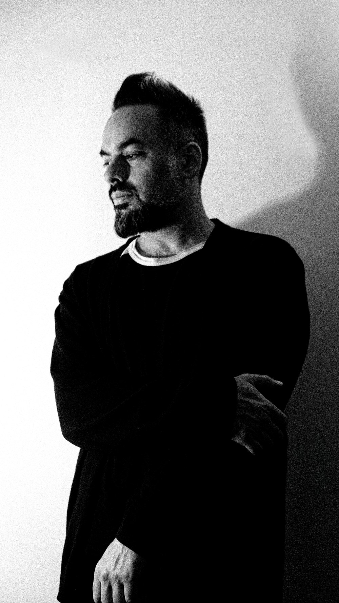

Since 2010
About
Constantin Tzenos is the Toronto-based producer and DJ behind Odonis Odonis, a project spanning over a decade of genre-hopping work across post-punk, shoegaze, industrial, EBM, and darkwave. Since 2010, he's built a catalog of six full-length albums and remix work that moves fluidly between the dancefloor and the record collection.
Beyond the studio, Tzenos has stepped fully into event and production work, DJing sets that draw on the same dark, rhythm-driven instincts behind the records. Sets are built to move a room — heavy, relentless, and built for the floor.

Label & Studio
After Hours
After Hours is the band's home base — the label behind the self-titled album, released in partnership with Royal Mountain Records, and Constantin Tzenos's Toronto studio for production, scoring, and mastering. This site covers the band; After Hours covers the label and studio work.
Discography
- Odonis Odonis (self-titled) — 2025, After Hours / Royal Mountain Records
- ICON EP — 2023 — collaborations with TOBACCO, ACTORS, A Place to Bury Strangers, Patriarchy and SUUNS
- Spectrums — 2021 — Juno Award nomination
- Reaction EP — 2019
- No Pop — 2017 — Pitchfork 8.1
- Post Plague — 2016 — Pitchfork 7.9
- Hard Boiled Soft Boiled — 2014 — Polaris Music Prize longlist; The Needle Drop Track of the Day for “Are We Friends” and “Order in the Court”
- Hollandaze — 2011